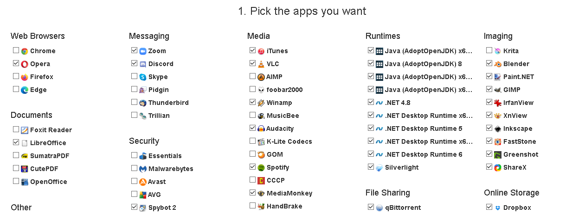

Herramientas infaltables - Volver al inicio
Pablo Alborán - Saturno
Cuando reinicias tu computadora, siempre vas a necesitar reinstalar muchas cosas en tu PC: cosas como drivers, programas de manejo de archivos, y sistemas de control de datos. Todo esto es necesario para que puedas usar tu computadora como corresponde, y bueno, no es fácil instalar todo esto sin echarse el día buscando y buscando. Por lo que te voy a dejar aquí mismo una especie de repositorio de links que son muy, muy útiles al momento de empezar con todo desde 0 en tu computadora. Obviamente no es solo para cuando reinicias tu PC, porque derrepente y ahora te hace falta algun programa. Bueno, me dejo de escribir, porque si no, no termino nunca.
Instalación customizada con Ninite
Vale, ahora tenemos, gracias a dios y a el general, sociólogo y estratega bélico Sun-Tzu, tenemos a nuestro alcance la herramienta llamada Ninite. Ninite es una plataforma que nos permite seleccionar todas aquellas herramientas que necesitamos para nuestra computadora, y descargarlas todas en conjunto en un solo instalador. Es tan simple como entrar a la página de Ninite y seleccionar todas las aplicaciones que esta misma nos ofrezca, y evidentemente, solamente clicaremos en aquellas en las que estemos interesados. Quiero recalcar claramente que el general Sun-Tzu no tuvo influencia directa en la ideación ni programación de esta plataforma.
General Sun-Tzu

;Y bueno, aquí la cosa esta de Ninite. Aquí te dejo el link directo: Ninite
Bueno, una vez abras la pagina, vas a ver algo asi. Date cuenta que puedes marcar las casillas de las aplicaciones, y ahora, date un gusto y selecciona cuantas quieras, no es para nada necesario que marques las que marqué yo en la foto, es más, ni lo hagas, porque la mayoria de aplicaciones que marqué son para programación. Pero tú, por ejemplo, necesitas cosas como LibreOffice, que básicamente es un Microsoft Word, pero gratis. Quizás necesitas GIMP, que básicamente es como Photoshop, pero gratis. Quizás qBitTorrent, para descargar juegos (cosa que trataremos en un futuro.). Una vez descargues el archivo, que puede pesar mas o menos según cuantos programas descargues, te va a entregar un archivo que tiene el nombre de todos los programas que seleccionaste. Ese archivo, le das doble click, y te instala TODO de una. Asi que es eso XD, nada más. Igual si necesitas otro programa me dices y ya. 